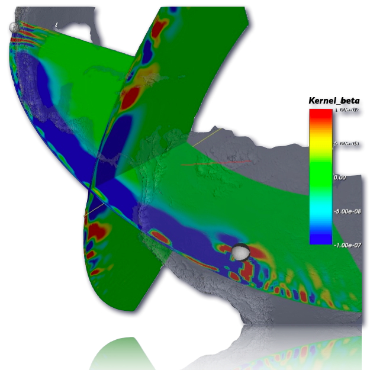
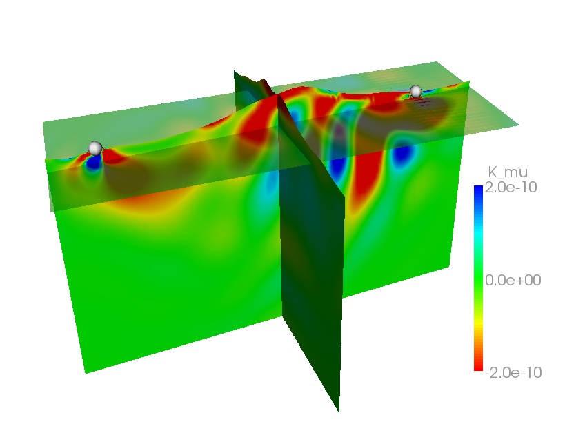
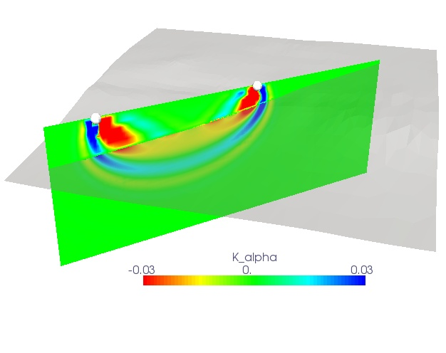

3D sensitivity kernels

A common goal in seismic tomography is to use the differences in observed
and synthetic seismograms to refine seismic models and improve earthquake source descriptions.
A challenging task is to find out how a measurement of such differences is sensitive to perturbations
in the model and/or source parameters. This is where the 3D sensitivity kernels come into play.

There is a bit of math involved, but the problem basically starts with defining some measure of misfit.
The goal is then to find the model parameters which minimize this misfit function. To do this,
you can rely for example on a gradient optimization method. That is, you calculate the gradient of the
misfit function at your starting model point and then you just slide down along it. This gradient
involves the computation of the sensitivity kernels, i.e. the sensitivity of your measurements
towards the model perturbations.

Usually, this computation becomes too heavy if you would perturb each
model parameter one by one. Fortunately, we can use an adjoint method, i.e. combining a
forward propagation simulation with a time-reversal, adjoint simulation and you end up with the
exact sensitivity kernels. So, if we can numerically simulate the fully 3D seismic wavefields,
we are also able to compute the 3D sensitivity kernels and thus the gradients for the optimization.
You see now that the inverse problem of finding the best model parameters is intimately linked to solving
the forward problem of seismic wave propagation through the Earth.
references:
Peter, D.,D. Komatitsch, Y. Luo, R. Martin, N. Le Goff, E. Casarotti, P. Le Loher, F. Magnoni, Q. Liu, C. Blitz, T. Nissen-Meyer, P. Basini and J. Tromp, 2011. Forward and adjoint simulations of seismic wave propagation on fully unstructured hexahedral meshes , Geophys. J. Int., 186 (2), 721-739.